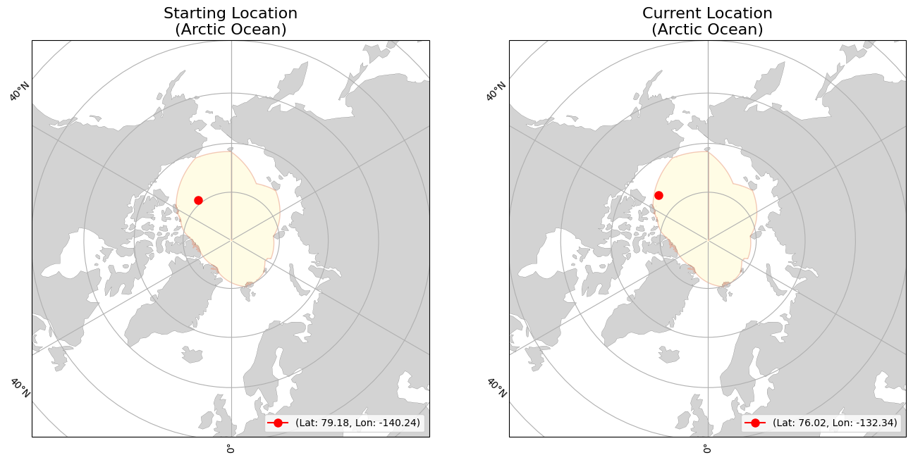
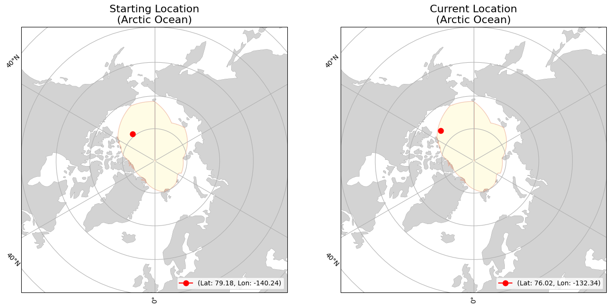

lon=-140.13773
(Beaufort Sea)
lon=-132.33713
(Arctic Ocean)
|
|
Buoy | Movement | Temperature | |||
|---|---|---|---|---|---|---|
| ID | 900136 | Initial Position | lat=73.17047 lon=-140.13773 (Beaufort Sea) |
Average Air Temperature | avg_air_temp | |
| Type | ITP | Current Position | lat=76.02097 lon=-132.33713 (Arctic Ocean) |
Minimum Air Temperature | min_air_temp | |
| Start Date | 01-01-2024 | Daily Distance Mean | 9.683 | Maximum Air Temperature | max_air_temp | |
| End Date | 09-05-2024 | Daily Distance Median | 7.877 | Average Sea Surface Temperature | avg_sst | |
| Status | floating | Daily Distance Standard Deviation | 7.011 | Minimum Sea Surface Temperature | min_sst | |
| Total Distance Start to End Dates | 2411.083 | Maximum Sea Surface Temperature | max_sst | |||
 
